Soru 1Cevap: C
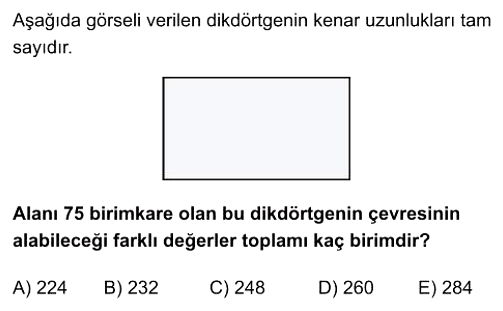
Çözüm
- Kenarlar tam sayı ve çarpımları 75: $1\times75$, $3\times25$, $5\times15$.
- Çevreler: $152$, $56$, $40$.
- Toplam $248$ → C.
Cevap: C
Soru 2Cevap: C
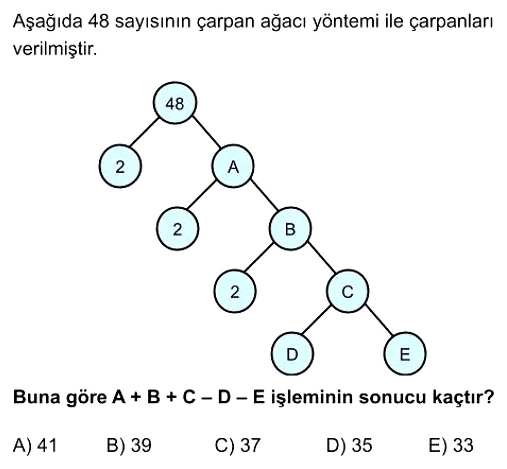
Çözüm
- $48=2\cdot A \Rightarrow A=24$; $B=12$; $C=6$.
- $C=2\cdot3$: $D=2$, $E=3$.
- $24+12+6-2-3=37$ → C.
Cevap: C
Soru 3Cevap: D
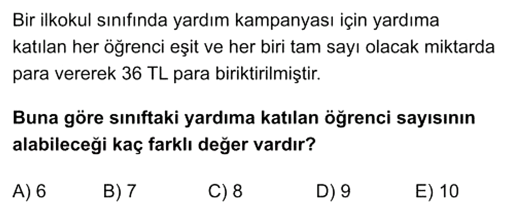
Çözüm
- Öğrenci sayısı $n$ ve kişi başı miktar tam sayı: $n\mid36$.
- $36=2^2\cdot3^2$ → $3\cdot3=9$ bölen.
- 9 farklı değer → D.
Cevap: D
Soru 4Cevap: C
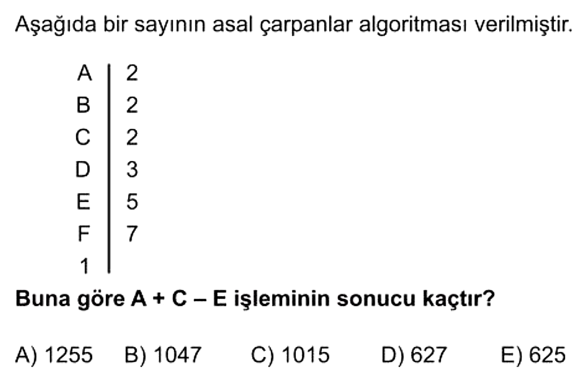
Çözüm
- Aşağıdan yukarı: $F=7$, $E=35$, $D=105$, $C=210$, $B=420$, $A=840$.
- $A+C-E=840+210-35$.
- $=1015$ → C.
Cevap: C
Soru 5Cevap: B
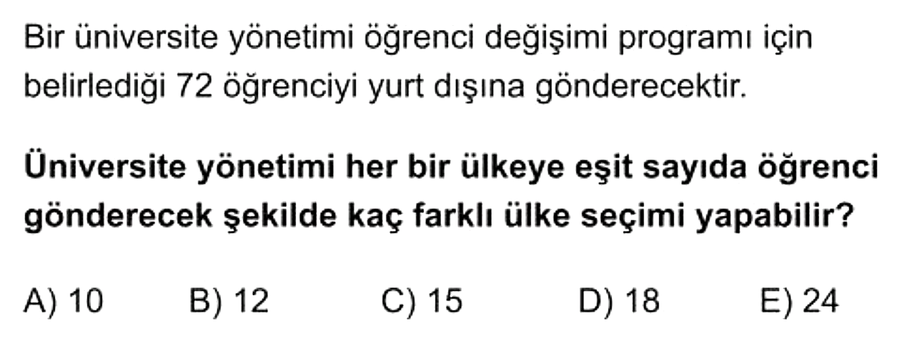
Çözüm
- Her ülkeye eşit sayıda öğrenci → ülke sayısı $72$'nin böleni.
- $72=2^3\cdot3^2$.
- $4\cdot3=12$ seçim → B.
Cevap: B
Soru 6Cevap: C
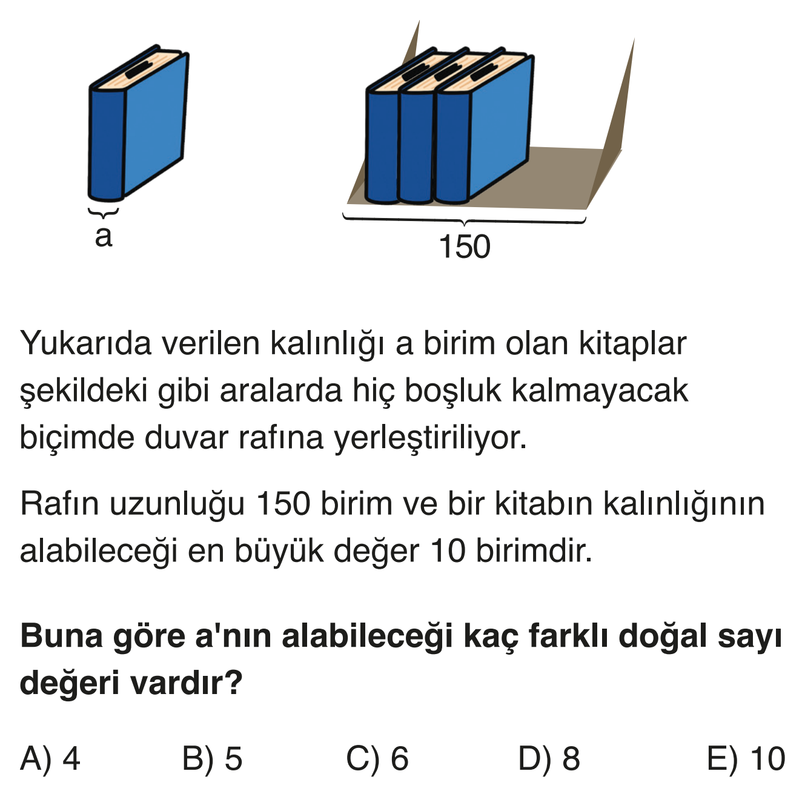
Çözüm
- Kitaplar boşluksuz: $150=n\cdot a$ → $a\mid150$.
- $a\le10$: $1,2,3,5,6,10$.
- 6 değer → C.
Cevap: C
Soru 7Cevap: C
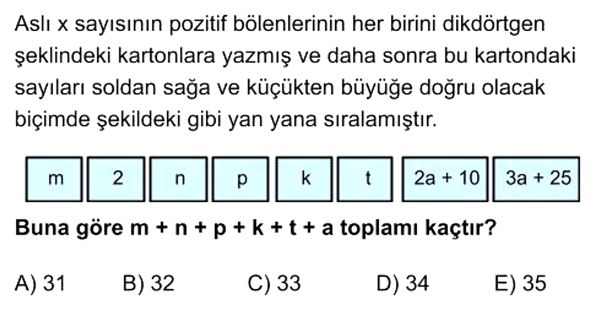
Çözüm
- Bölenler sıralı ve 8 tane: $m=1$; en büyük ikisi $x$ ve $\frac x2$ → $3a+25=2(2a+10) \Rightarrow a=5$, $x=40$.
- $40$'ın bölenleri: $1,2,4,5,8,10,20,40$ → $m=1$, $n=4$, $p=5$, $k=8$, $t=10$.
- $1+4+5+8+10+5=33$ → C.
Cevap: C
Soru 8Cevap: A
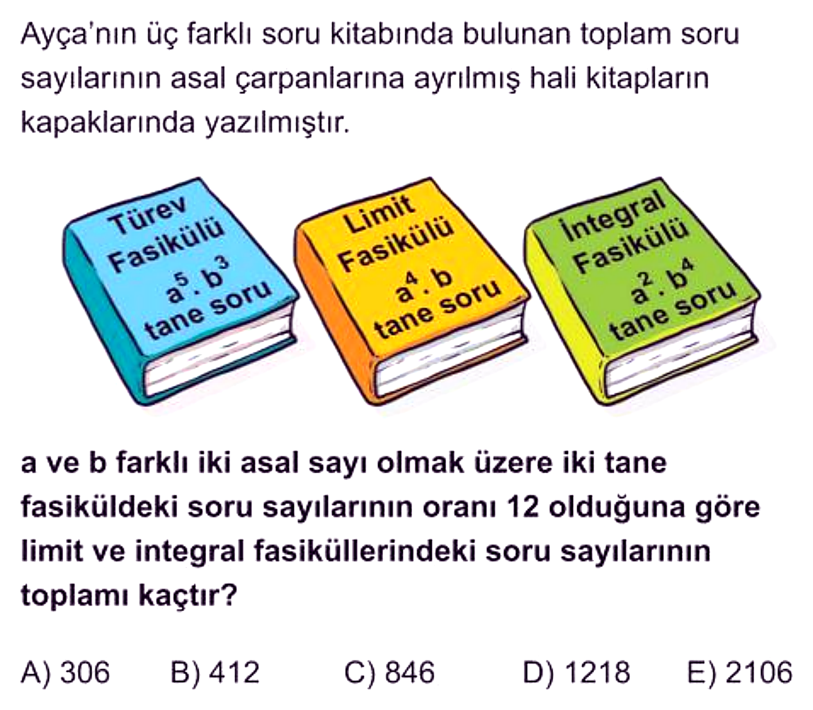
Çözüm
- Türev: $a^5b^3$, limit: $a^4b$, integral: $a^2b^4$; oranı 12 olan ikili $\frac{a^5b^3}{a^4b}=ab^2=12$.
- $a$, $b$ farklı asal: $a=3$, $b=2$.
- Limit + integral $=81\cdot2+9\cdot16=306$ → A.
Cevap: A
Soru 9Cevap: E
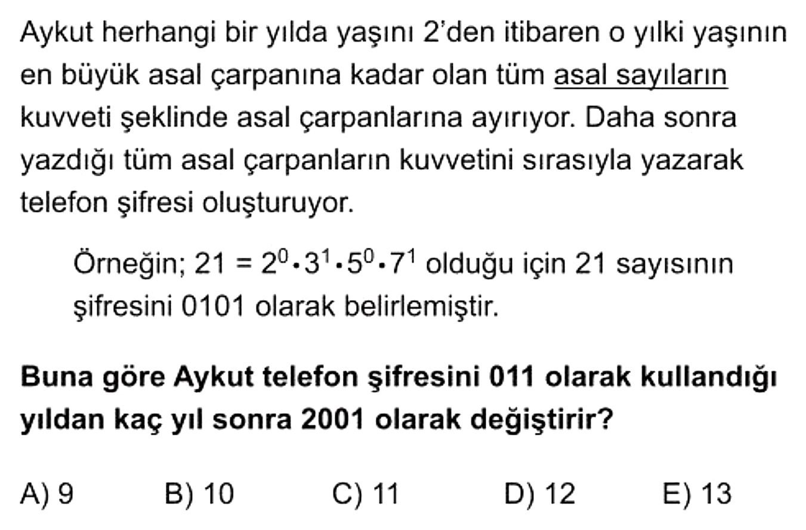
Çözüm
- Şifre 011 → $2^0\cdot3^1\cdot5^1=15$ yaş.
- Şifre 2001 → $2^2\cdot3^0\cdot5^0\cdot7^1=28$ yaş.
- $28-15=13$ yıl → E.
Cevap: E
Soru 10Cevap: A
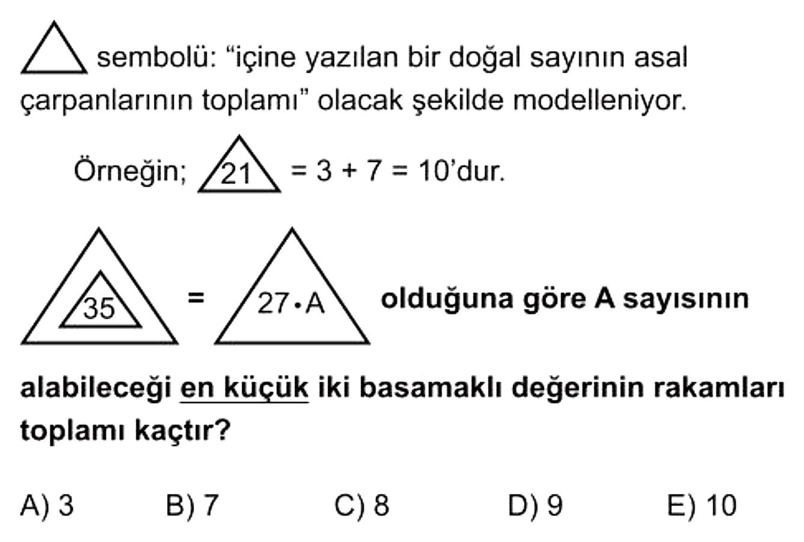
Çözüm
- İç üçgen: $\triangle(35)=5+7=12$; dış üçgen: $\triangle(12)=2+3=5$.
- $27A$ sayısının farklı asal çarpanlarının toplamı 5 → yalnız 2 ve 3; $A=2^x\cdot3^y$ ($x\ge1$).
- En küçük iki basamaklı $A=12$; rakamları toplamı 3 → A.
Cevap: A
Soru 11Cevap: D
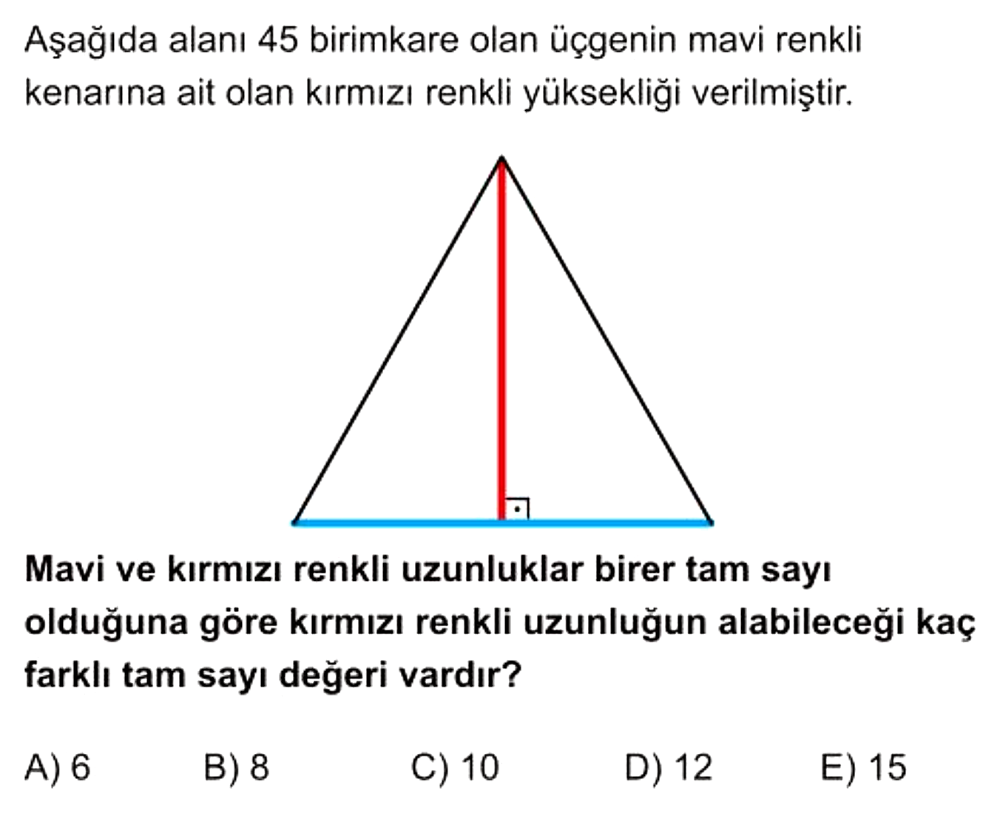
Çözüm
- $\frac{\text{taban}\cdot h}2=45 \Rightarrow \text{taban}\cdot h=90$, ikisi de tam sayı.
- $h$, $90$'ın pozitif bölenidir: $90=2\cdot3^2\cdot5$.
- $2\cdot3\cdot2=12$ değer → D.
Cevap: D
Soru 12Cevap: D
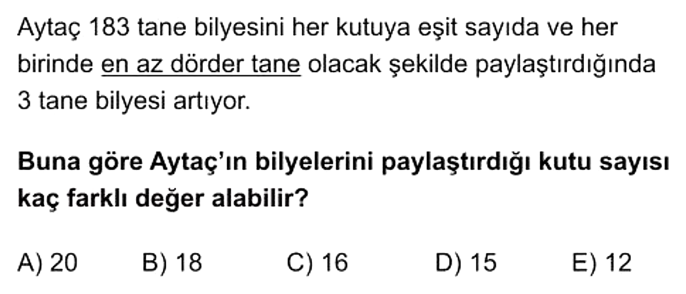
Çözüm
- $183=k\cdot n+3$ ve kutudaki sayı $n\ge4$ (kalan 3 < $n$).
- $k\cdot n=180=2^2\cdot3^2\cdot5$ → 18 bölen.
- $n\ge4$: $1,2,3$ çıkarılır → 15 → D.
Cevap: D
Soru 13Cevap: C
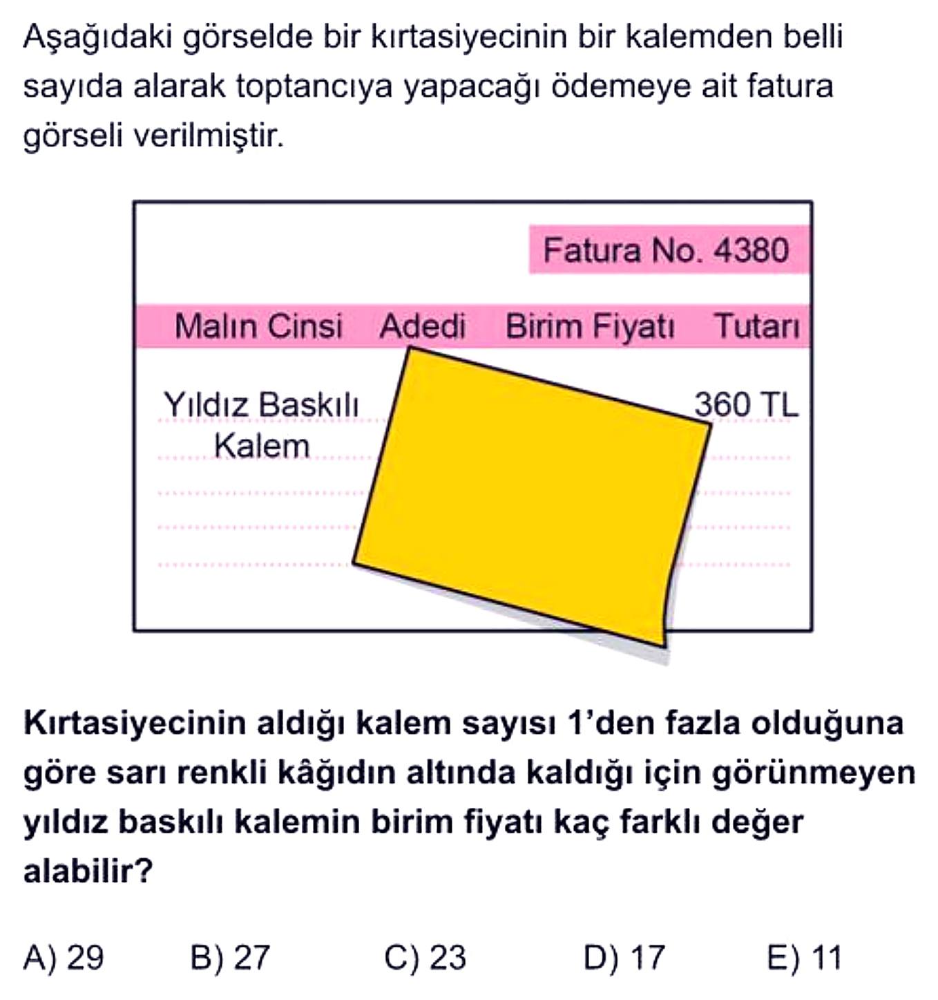
Çözüm
- Kalem sayısı · birim fiyat $=360$; ikisi de tam sayı.
- $360$'ın 24 pozitif böleni var; kalem sayısı 1'den fazla → kalem sayısı 1 olan durum çıkar.
- $24-1=23$ → C.
Cevap: C
Soru 14Cevap: D
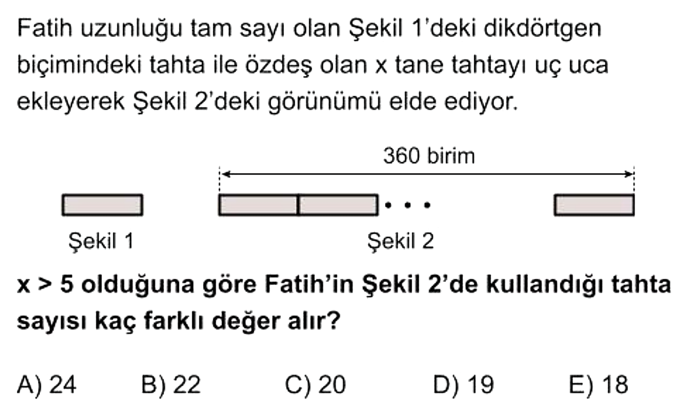
Çözüm
- $x$ tahta uç uca 360 birim: $x\mid360$.
- $360=2^3\cdot3^2\cdot5$ → 24 bölen.
- $x>5$: $1,2,3,4,5$ çıkarılır → 19 → D.
Cevap: D
Soru 15Cevap: C
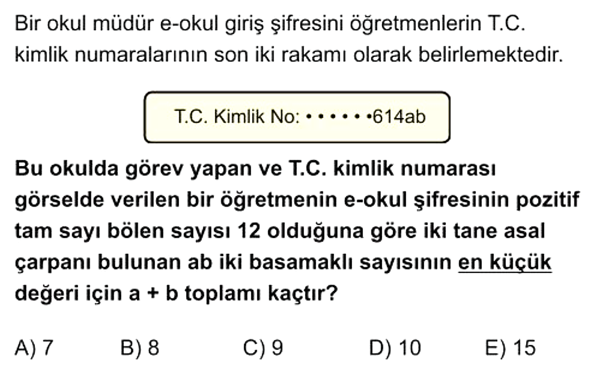
Çözüm
- $ab$'nin iki asal çarpanı ve 12 pozitif böleni var: $p^2q^3$ ya da $p^5q$ biçiminde.
- İki basamaklı adaylar: $2^3\cdot3^2=72$, $2^5\cdot3=96$ ($2^2\cdot3^3=108$ büyük).
- En küçük $72$: $7+2=9$ → C.
Cevap: C
Soru 16Cevap: B
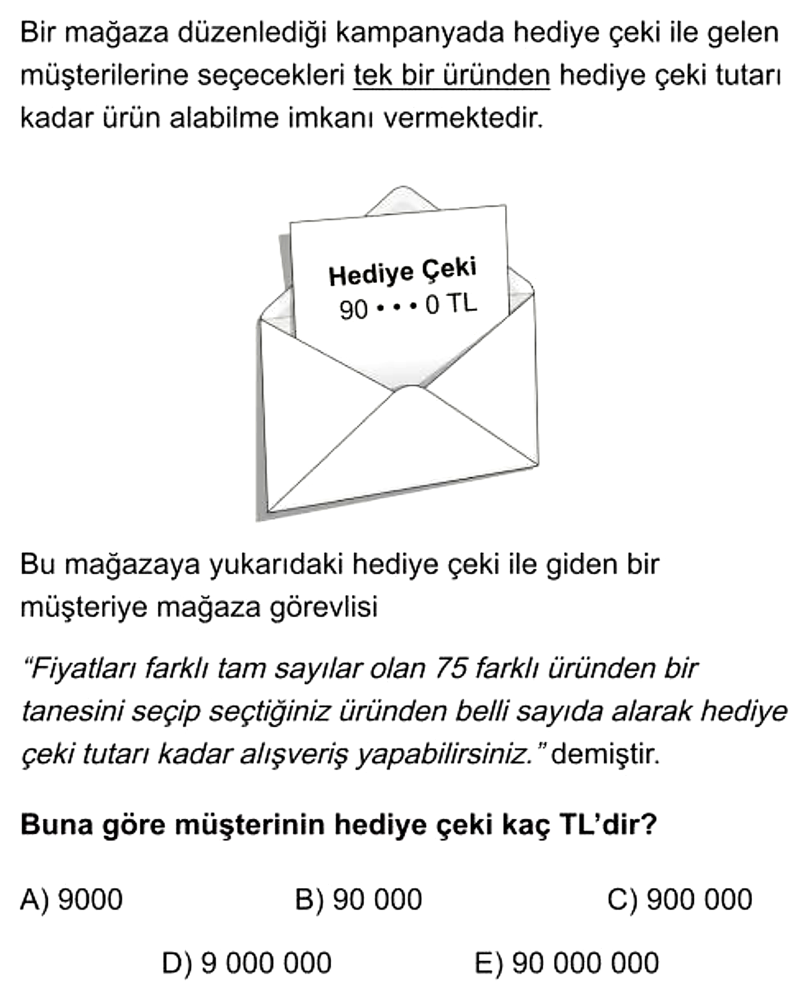
Çözüm
- Çek tutarı 75 farklı fiyata tam bölünebilir → 75 pozitif böleni var.
- $9\cdot10^n=2^n\cdot3^2\cdot5^n$ → $(n+1)\cdot3\cdot(n+1)=75 \Rightarrow n=4$.
- Tutar $90\,000$ TL → B.
Cevap: B
Soru 17Cevap: D
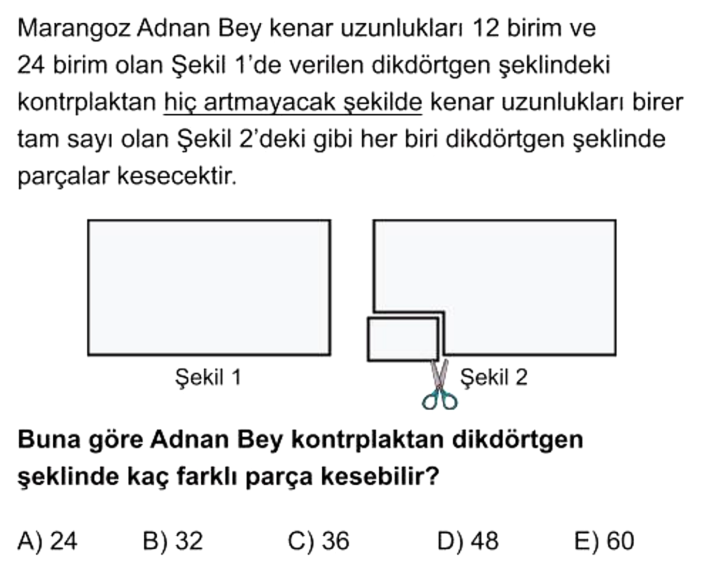
Çözüm
- Artmasız kesim: parça kenarları 12'nin ve 24'ün bölenleri olmalı.
- $12$'nin 6, $24$'ün 8 pozitif böleni var.
- $6\cdot8=48$ farklı parça → D.
Cevap: D
Soru 18Cevap: B
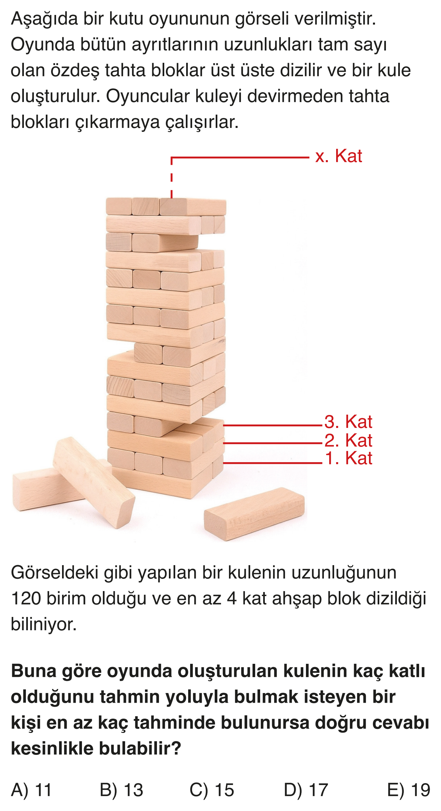
Çözüm
- Kat sayısı $k$ ve blok yüksekliği tam sayı: $k\mid120$.
- $120=2^3\cdot3\cdot5$ → 16 bölen.
- $k\ge4$: $1,2,3$ çıkar → 13 tahmin → B.
Cevap: B
Soru 19Cevap: B
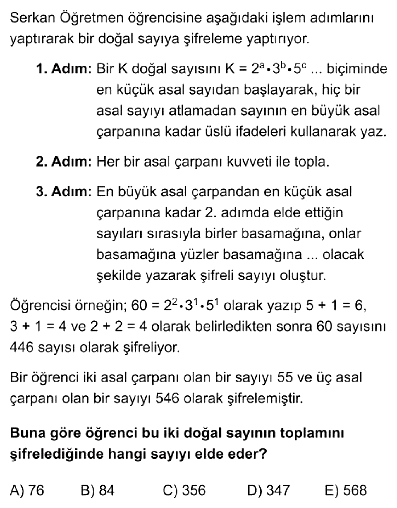
Çözüm
- 55: iki asal çarpan (2 ve 3): $3+e_3=5$, $2+e_2=5$ → $2^3\cdot3^2=72$.
- 546: $5+e_5=6$, $3+e_3=4$, $2+e_2=5$ → $2^3\cdot3\cdot5=120$.
- $72+120=192=2^6\cdot3$ → birler $3+1=4$, onlar $2+6=8$: 84 → B.
Cevap: B
Soru 20Cevap: C
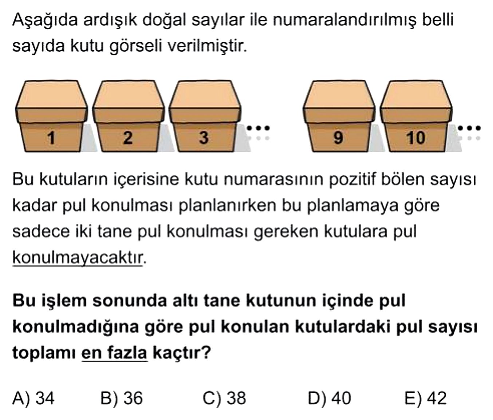
Çözüm
- Pul konmayan kutular asal numaralı (2 böleni olan): 6 tane → $2,3,5,7,11,13$; en fazla 16 kutu.
- $1$'den $16$'ya bölen sayıları toplamı $50$.
- Asal kutular çıkarılır: $50-6\cdot2=38$ → C.
Cevap: C